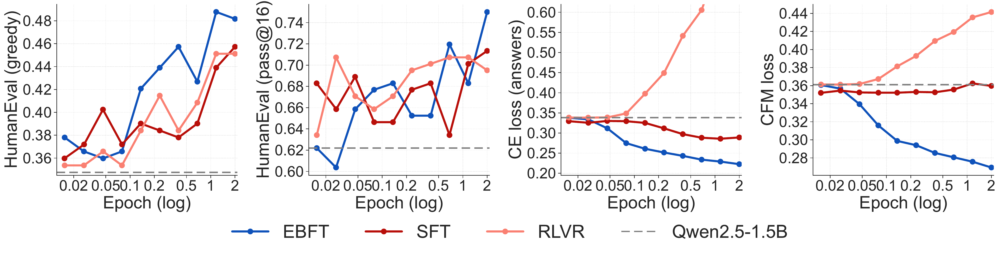
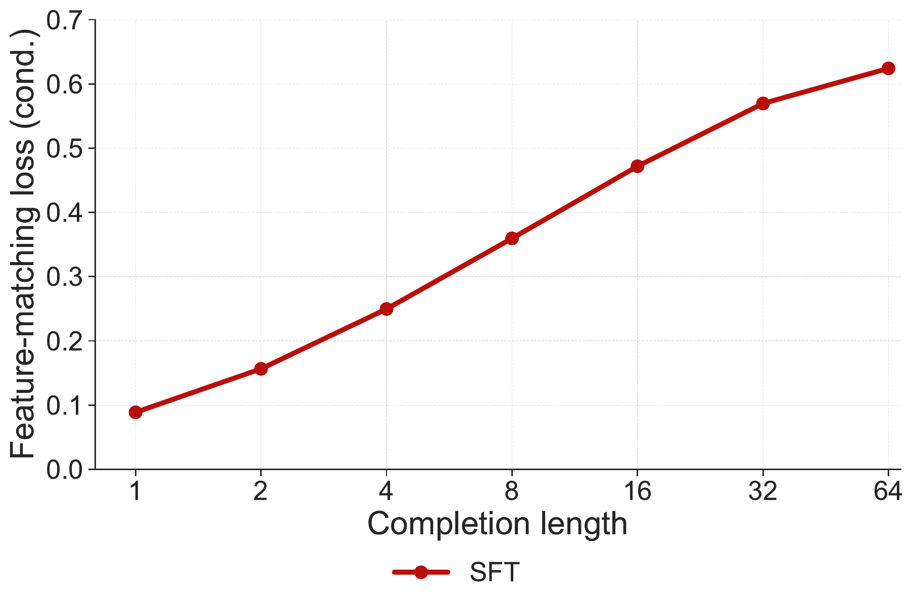
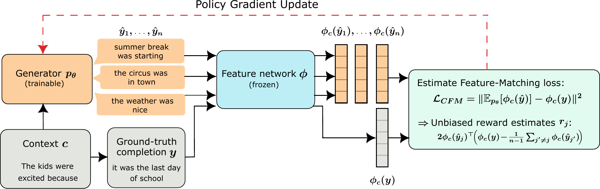
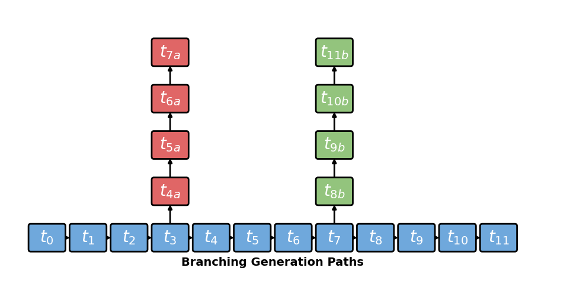
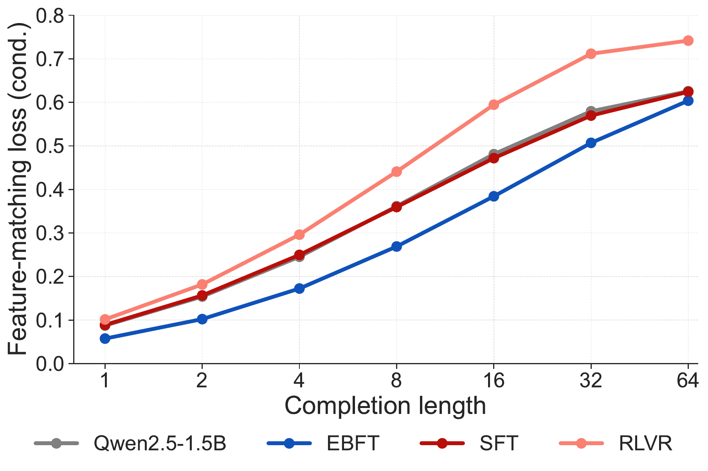
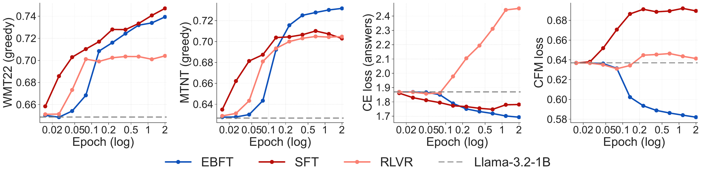
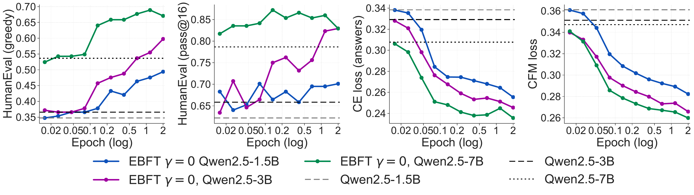

An interactive explainer
Matching Features, Not Tokens
Cross-entropy training teaches a model to predict the next token given a perfect prefix — but at generation time the model must feed on its own, imperfect output. That mismatch is why a model with great perplexity can still drift over long generations. Reinforcement learning fixes the mismatch, but it needs a verifier and quietly wrecks the model's language-modeling quality. Energy-Based Fine-Tuning (EBFT) proposes a third path: don't match tokens, match features. Embed the model's rollouts and the ground-truth completion through a frozen network, and train so their feature statistics agree. The result needs no verifier, beats supervised fine-tuning on downstream accuracy, ties verifier-based RL — and reaches a validation cross-entropy of 0.207 versus 0.289 for the method that directly optimizes it.

Almost every language model you have ever used was trained, at its core, the same way: predict the next token. Stack enough of these one-step predictions and you get a fluent writer. The objective — cross-entropy under teacher forcing — is dense, stable, and embarrassingly parallel. It is the workhorse of pre-training, mid-training, and supervised fine-tuning (SFT).
But there is a crack in it. During training, the model always conditions on a ground-truth prefix. At deployment, it conditions on its own generations. One early mistake shifts the context for every token that follows, and the model finds itself sampling from distributions it was barely trained on. Low perplexity certifies one-step accuracy on clean prefixes; it says nothing about whether a model stays calibrated over a long, self-generated rollout.
Reinforcement learning with verifiable rewards (RLVR) attacks exactly this gap — it optimizes sequence-level behavior under the model's own rollouts. But it needs a reliable reward (does the code pass the tests? is the answer correct?), which often does not exist, and it optimizes a single scalar that has nothing to say about distributional quality. As Figure 1 shows, RLVR can lift accuracy while more than doubling the model's cross-entropy.
This paper asks: what if the training signal lived not in tokens, and not in a scalar reward, but in a rich feature space? Embed a completion through a frozen network, and you get a vector that captures its meaning and structure. Train the model so the average feature of its rollouts matches the feature of the real data. That is EBFT — and it turns out to fix the rollout problem and the language-modeling problem at once.
1. The crack in cross-entropy
The technical name for the crack is exposure bias: the model is never exposed to its own mistakes during training. There is a clean way to measure the damage. Braverman et al. (2019) tracked the expected entropy of the $k$-th generated token as $k$ grows. For a perfect model, generated prefixes look exactly like real text, so this entropy should stay flat. In practice it climbs — the model's own continuations push it further and further off the data manifold, even when training perplexity is excellent.
The authors turn this diagnostic into something sharper. Pick a feature map $\phi$ that embeds a full prompt–completion sequence into $\R^d$. For each context $c$, compare the mean feature of the model's completions to the feature of the ground-truth completion. Call the squared gap the conditional feature-matching (CFM) loss. Plot it as a function of completion length and you see the crack directly: under SFT, the loss grows the longer the model generates.

Some of that rise is unavoidable: longer completions are more variable, so even an ideal model would show some growth. But part of it is genuine miscalibration — the model's rollouts drift from the data in feature space. SFT cannot see this, because SFT never looks at its own rollouts. RLVR does look at rollouts, but optimizes a reward that is blind to it. The natural move is to make this very quantity the training objective.
2. Matching features, not tokens
Here is the central object — built one piece at a time. We have contexts $c$ drawn from the data distribution $p$. For each context, the data supplies ground-truth completions $y \sim p(\cdot\mid c)$, while the model $\ptheta$ supplies its own rollouts $\yhat \sim \ptheta(\cdot\mid c)$. A frozen feature map $\phi$ turns a full sequence into a vector in $\R^d$; we abbreviate $\phic(y) := \phi(c\!:\!y)$, the embedding of the prompt $c$ and completion $y$ stitched into one sequence. From these, form the two mean feature vectors — one per source of completions:
$$ \underbrace{\mu_\theta(c) := \E_{\yhat \sim \ptheta(\cdot\mid c)}\big[\phic(\yhat)\big]}_{\text{model mean}} \qquad\qquad \underbrace{\bar\phi(c) := \E_{y \sim p(\cdot\mid c)}\big[\phic(y)\big]}_{\text{data mean}} $$
Read $\mu_\theta(c)$ as the recipe "sample many completions from the model, embed each one, average the vectors"; $\bar\phi(c)$ is the same recipe run on real completions. Both are single points in $\R^d$. The feature-matching loss is then just their squared distance, averaged over contexts:
$$ \L_{\FM}(\theta) = \E_{c \sim p}\Big[\;\big\|\, \mu_\theta(c) - \bar\phi(c) \,\big\|^2 \;\Big]. $$
A model is feature-calibrated when this loss is zero — its expected features match the data's for every context. And here is the quiet power of the construction: if the feature map is rich enough that matching feature moments forces the distributions to match, then $\L_\FM$ is a strictly proper scoring rule. It cannot be gamed by a model that nails some statistics while drifting on others.
To build intuition, collapse to the simplest case: completions of a single token ($G=1$), and let $\phi$ be one-hot — it embeds a token as its indicator vector ($1$ in that token's slot, $0$ everywhere else). Then the mean feature is nothing exotic. Averaging the one-hot vectors of the model's samples just recovers the model's next-token distribution, one coordinate per vocabulary token:
$$ \mu_\theta(c) = \E_{\yhat \sim \ptheta(\cdot\mid c)}\big[\,\mathbf{e}_{\yhat}\,\big] = \big(\ptheta(y\mid c)\big)_{y}, \qquad \bar\phi(c) = \big(p(y\mid c)\big)_{y}. $$
So the squared distance $\|\mu_\theta(c) - \bar\phi(c)\|^2$ becomes an ordinary $\ell_2$ distance between next-token distributions — here it is beside the usual cross-entropy log loss (the sum runs over vocabulary tokens $y$):
$$ \L_{\FM} = \E_{c}\Big[\textstyle\sum_{y}\big(\ptheta(y\mid c) - p(y\mid c)\big)^2\Big], \qquad \L_{\CE} = -\,\E_{c}\Big[\textstyle\sum_{y} p(y\mid c)\,\log \ptheta(y\mid c)\Big]. $$
Both are minimized by the same distribution — the truth, $\ptheta = p$ — so they are not in tension. But their landscapes differ. Cross-entropy is asymmetric: it punishes underestimating a token the data likes far more harshly than overestimating it (drop a true token's probability toward zero and the log loss races to infinity). Feature matching is symmetric. Drag the model distribution around below and watch the two losses respond.
This is why feature matching is a complement to cross-entropy rather than a rival. They agree on the destination; they disagree on the road. And once you let completions grow beyond a single token, with a real feature map instead of one-hot vectors, $\L_\FM$ can target sequence-level statistics — coherence, faithfulness, formatting — that the token-by-token CE loss is structurally blind to.
Building the feature map
The feature network $\phi$ is just a frozen copy of the model at initialization. To embed a sequence, the authors concatenate intermediate activations from three depths — 25%, 50%, and 75% through the network — normalizing each block to unit norm. The reasoning: early layers carry low-level surface information, final layers are biased toward next-token prediction, and the middle layers hold the semantic and structural content you actually want to match. High-dimensional features from these depths come close to the "rich enough" condition that makes the loss a proper scoring rule.
3. The EBFT trick: rollouts, rewards, REINFORCE
There is an obstacle, and it is the data mean. Recall the loss $\L_\FM(\theta) = \E_c\big[\,\|\mu_\theta(c) - \bar\phi(c)\|^2\,\big]$ compares the model mean $\mu_\theta(c)$ against the data mean $\bar\phi(c) = \E_{y\sim p(\cdot\mid c)}[\phic(y)]$. But $\bar\phi(c)$ averages over all valid completions of $c$, and the dataset hands us only one ground-truth completion $y$ per context — so we can never form $\bar\phi(c)$ directly.
The fix is to optimize a surrogate built from a single $y$. Define the per-example conditional feature-matching (CFM) loss
$$ \L_{\CFM}(\theta; c, y) := \big\|\, \mu_\theta(c) - \phic(y) \,\big\|^2, $$
and average it over the ground-truth draw $y \sim p(\cdot\mid c)$. Adding and subtracting the unknown data mean $\bar\phi(c)$ inside the norm produces a clean bias–variance split (dropping the argument $c$ for brevity):
$$ \begin{aligned} \E_{y}\big[\L_{\CFM}(\theta; c, y)\big] &= \E_{y}\big\|\,(\mu_\theta - \bar\phi) + (\bar\phi - \phic(y))\,\big\|^2 \\[4pt] &= \underbrace{\|\mu_\theta - \bar\phi\|^2}_{\text{the }\L_\FM\text{ integrand}} \;+\; 2\,(\mu_\theta - \bar\phi)^\top \underbrace{\E_{y}\big[\,\bar\phi - \phic(y)\,\big]}_{=\,0} \;+\; \underbrace{\E_{y}\big\|\phic(y) - \bar\phi\big\|^2}_{=\,\V(c)\ \text{(data feature variance)}}. \end{aligned} $$
The cross term vanishes because $\E_y[\phic(y)] = \bar\phi$ by definition, so the deviation averages to zero. What is left is exactly the $\L_\FM$ integrand plus $\V(c)$ — the variance of the data features, which knows nothing about $\theta$. A $\theta$-independent term has zero gradient, so
$$ \nabla_\theta\, \E_{c,\,y}\big[\L_{\CFM}(\theta; c, y)\big] \;=\; \nabla_\theta\, \L_\FM(\theta). $$
Minimizing the single-sample CFM loss therefore minimizes the true feature-matching loss exactly, gradient for gradient — even though we never observe $\bar\phi(c)$.

Now we differentiate $\L_{\CFM}(\theta; c, y)$. The only place $\theta$ enters is the model mean $\mu_\theta(c) = \sum_{\yhat} \ptheta(\yhat\mid c)\,\phic(\yhat)$ — the ground-truth feature $\phic(y)$ is fixed. Expanding the square and differentiating,
$$ \L_{\CFM}(\theta; c, y) = \|\mu_\theta\|^2 - 2\,\mu_\theta^\top \phic(y) + \|\phic(y)\|^2, \qquad \nabla_\theta \L_{\CFM} = 2\,\big(\mu_\theta - \phic(y)\big)^\top \nabla_\theta \mu_\theta. $$
The catch is $\nabla_\theta \mu_\theta$: it is the gradient of an expectation whose sampling distribution depends on $\theta$, and the rollouts $\yhat$ are discrete tokens, so we cannot push the derivative inside $\phic(\yhat)$. This is what the REINFORCE / log-derivative identity is for. Using $\nabla_\theta \ptheta(\yhat\mid c) = \ptheta(\yhat\mid c)\,\nabla_\theta \log \ptheta(\yhat\mid c)$,
$$ \nabla_\theta \mu_\theta = \sum_{\yhat} \nabla_\theta \ptheta(\yhat\mid c)\,\phic(\yhat) = \E_{\yhat \sim \ptheta(\cdot\mid c)}\big[\,\phic(\yhat)\,\nabla_\theta \log \ptheta(\yhat\mid c)\,\big]. $$
Substituting back and collecting the scalar that multiplies each score $\nabla_\theta \log \ptheta(\yhat\mid c)$ turns the gradient into a policy gradient with a reward attached to each rollout:
$$ \nabla_\theta \L_{\CFM}(\theta; c, y) = \E_{\yhat \sim \ptheta(\cdot\mid c)}\Big[\,\nabla_\theta \log \ptheta(\yhat\mid c)\;\underbrace{2\,\phic(\yhat)^\top\big(\mu_\theta - \phic(y)\big)}_{=\,-\,r(\yhat,\,c)}\,\Big] = -\,\E_{\yhat \sim \ptheta(\cdot\mid c)}\big[\,\nabla_\theta \log \ptheta(\yhat\mid c)\; r(\yhat, c)\,\big]. $$
Reading off the reward — and recalling $\mu_\theta = \E_{\tilde{y} \sim \ptheta(\cdot\mid c)}[\phic(\tilde{y})]$ — it decomposes into two intuitive forces:
$$ r(\yhat, c) = \underbrace{2\,\phic(\yhat)^\top \phic(y)}_{\text{alignment}} \;-\; \underbrace{2\,\phic(\yhat)^\top \E_{\tilde{y} \sim \ptheta(\cdot\mid c)}[\phic(\tilde{y})]}_{\text{diversity}}. $$
The alignment term rewards a rollout for pointing toward the ground-truth feature — pull toward the truth. The diversity term penalizes a rollout for pointing toward the average rollout $\mu_\theta$ — push apart from the herd. The minus sign out front is doing real work: the update is $\theta \leftarrow \theta - \eta\,\nabla_\theta \L_{\CFM}$, so it cancels, and the step is gradient ascent — it raises $\log \ptheta(\yhat\mid c)$ for rollouts whose reward is high. Together the two forces say: move the cloud of rollouts so its center lands on the ground truth, but don't collapse the cloud to a single point.
In practice both expectations are Monte-Carlo estimated from the same batch of $n>1$ rollouts $\yhat_1,\dots,\yhat_n \sim \ptheta(\cdot\mid c)$. The subtlety is the diversity term: rollout $i$'s reward contains $\mu_\theta$, and estimating $\mu_\theta$ from the full batch would pair $\phic(\yhat_i)$ with itself ($\phic(\yhat_i)^\top\phic(\yhat_i) \ge 0$ always), biasing the reward. The fix is a leave-one-out mean over the siblings,
$$ \hat\mu_{-i} = \frac{1}{n-1}\sum_{j \ne i} \phic(\yhat_j), \qquad r_i = 2\,\phic(\yhat_i)^\top \phic(y) \;-\; 2\,\phic(\yhat_i)^\top \hat\mu_{-i}, $$
an unbiased estimate of $r(\yhat_i, c)$. Pairing it with a REINFORCE leave-one-out (RLOO) baseline $b_i = \tfrac{1}{n-1}\sum_{j\ne i} r_j$ — subtracting the average reward of the other rollouts to cut variance without adding bias — gives the gradient estimator the method actually runs,
$$ \widehat{\nabla_\theta \L_{\CFM}} = -\,\frac{1}{n}\sum_{i=1}^{n} \big(r_i - b_i\big)\,\nabla_\theta \log \ptheta(\yhat_i \mid c). $$
That sentence — "move the cloud so its center lands on the ground truth" — is the method. Here it is as the single picture worth holding in your head:
The ground-truth completion is one blue star in feature space. The generator's rollouts are an orange cloud, and the feature-matching loss is the squared distance from the cloud's mean (orange ring) to the star. The REINFORCE update slides that mean onto the ground-truth feature — the loss collapses to zero — while the cloud keeps its spread. Matching the moment, not memorizing the token.
You can drive the two forces yourself. Below, the blue star is the ground-truth feature and the orange dots are rollouts you can drag. Watch each rollout's reward split into its alignment and diversity parts, and watch the feature-matching loss — the gap between the rollout mean and the star — shrink as you pull the cloud's center onto the target.
4. An energy model hiding in the loss
Why call it energy-based fine-tuning? Add a KL leash to the objective — keep the new policy $\rho$ close to a reference $q$ while it chases the data's feature moment:
$$ \min_{\rho}\; \E_{c \sim p}\Big[\, \big\| \E_{\rho(\cdot\mid c)}[\phic(y)] - \E_{p(\cdot\mid c)}[\phic(y)] \big\|^2 + \tfrac{1}{\beta}\,\KL\!\big(\rho(\cdot\mid c)\,\|\,q(\cdot\mid c)\big) \Big]. $$
The minimizer is not some intractable object — it has a clean closed form, and the derivation is short. The objective separates over contexts, so fix one $c$ and write $m_\rho(c) := \E_{\rho(\cdot\mid c)}[\phic(y)]$ for the policy's feature mean and (as in Section 3) $\bar\phi(c) := \E_{p(\cdot\mid c)}[\phic(y)]$ for the data's. We are minimizing
$$ F_c(\rho) = \big\|\,m_\rho(c) - \bar\phi(c)\,\big\|^2 + \tfrac{1}{\beta}\,\KL\!\big(\rho(\cdot\mid c)\,\|\,q(\cdot\mid c)\big) $$
over the probability simplex. Because $m_\rho(c)$ is linear in $\rho$, the first term is a convex quadratic and the KL is strictly convex, so $F_c$ has a unique minimizer, pinned down by stationarity. Differentiating with respect to the mass $\rho(y\mid c)$ (with a multiplier enforcing $\sum_y \rho(y\mid c)=1$) gives, for every $y$,
$$ \underbrace{2\,\big(m_\rho(c) - \bar\phi(c)\big)^\top \phic(y)}_{\partial\,\|\cdot\|^2} \;+\; \tfrac{1}{\beta}\,\log\frac{\rho(y\mid c)}{q(y\mid c)} \;=\; \text{const (independent of }y\text{)}. $$
Solving for $\rho$ and folding the $y$-independent constant into the normalizer, the minimizer is an exponential tilt of the base model:
$$ \rho^\star(y\mid c) = \frac{1}{Z_c}\,q(y\mid c)\,\exp\!\big(-\chi_c^\top \phic(y)\big), \quad Z_c = \sum_{y'} q(y'\mid c)\,e^{-\chi_c^\top \phic(y')}, \quad E(y,c) = \chi_c^\top \phic(y). $$
And reading the tilt direction straight off the stationarity condition shows what $\chi_c$ is: it is the residual moment gap, scaled by the leash strength,
$$ \chi_c = 2\beta\,\big(\,m_{\rho^\star}(c) - \bar\phi(c)\,\big) \;=\; 2\beta\,\big(\,\E_{\rho^\star(\cdot\mid c)}[\phic(y)] - \E_{p(\cdot\mid c)}[\phic(y)]\,\big). $$
This is an implicit, fixed-point definition — $\chi_c$ depends on the very distribution it tilts — but it says exactly the right thing. The energy points along the direction in which the policy's feature mean still overshoots the data's, and the factor $e^{-\chi_c^\top\phic(y)}$ down-weights precisely the completions that drag the mean further that way. A looser leash (larger $\beta$) lets $\chi_c$ grow and the moment gap shrink; as $\beta\to 0$ the tilt vanishes and $\rho^\star$ collapses back to the reference $q$.
This is precisely an energy-based model: a Boltzmann distribution over completions with partition function $Z_c$ and an energy $E(y,c)=\chi_c^\top\phic(y)$ that is linear in the features. Read the other way, the optimal tilt direction $\chi_c$ is also the maximum-likelihood fit of that exponential family to the completions actually seen in the data. Crucially, EBFT never builds or learns $\chi_c$. It optimizes the generator's parameters directly, with the feature-matching gradient standing in for the energy model that the objective implicitly defines. The energy view is the explanation, not the implementation.
There is a second reading that ties it back to Section 1. The same KL-constrained problem is a calibration procedure: project the base model onto the set of distributions whose features match a target moment. Braverman et al. used exactly this idea to fix entropy drift — but with a single scalar statistic, the model's own log-probability. EBFT performs the same correction with a whole high-dimensional, semantically rich feature vector. It is entropy-drift calibration, scaled up from one number to a meaning-laden $\R^d$.
5. One sequence, many rollouts
A REINFORCE method that samples completions and runs them through a separate feature network sounds expensive — and naively it is. The authors make it affordable with a borrowed trick from Quiet-STaR: treat one training sequence as a source of many nested prompts. Place anchor points every $s$ tokens; from each anchor, the next $G$ tokens are a ground-truth completion, and you also sample a rollout of length $G$. One sequence of length $T$ yields
$$ B = \left\lfloor \frac{T - G}{s} \right\rfloor \quad \text{context–completion pairs.} $$

The payoff is that supervision is dense: instead of one signal per sequence, you get $B$ of them, and the whole batch of rollouts is generated and embedded together rather than one at a time. Try the arithmetic yourself — see how stride and completion length trade off the number of supervision points against the compute per sequence.
Whitening, and why CE goes down
One more ingredient matters. Raw features have correlated, anisotropic directions, so a few dimensions can dominate the loss. EBFT whitens the features using the (pseudo-inverse) second-moment matrix of the rollouts before computing rewards. This is not just a numerical nicety: the whitened feature-matching loss is a relaxation of the local $\chi^2$ divergence between the model and the data, and since $\KL(P\|Q)\approx \tfrac12 \chi^2(P\|Q)$ when $P$ and $Q$ are close, whitened feature matching approximates a sequence-level cross-entropy in the fine-tuning regime. This is the mechanism behind the headline curiosity: EBFT drives down validation cross-entropy more than SFT does.
The recipe
# One EBFT training iteration (generator p_theta, frozen feature net phi)
for (c, y) in batch: # context + ground-truth completion
y_hat = [sample(p_theta, c, length=G) for _ in range(n)] # n rollouts
f_gt = phi(c, y) # ground-truth feature
f = [phi(c, yh) for yh in y_hat] # rollout features
f, f_gt = whiten(f, f_gt) # condition the feature space
for j in range(n): # feature-matching reward
align = 2 * dot(f[j], f_gt) # pull toward truth
diver = (2/(n-1)) * sum(dot(f[j], f[k]) for k != j) # push off the herd
r[j] = align - diver
update p_theta with RLOO( grad_log_prob(y_hat, c), r ) # policy gradient
# optional: add gamma * cross_entropy(c, y) to speed up CE reductionThe defaults are striking for how small they are: a rollout horizon of only $G=8$ tokens (4 for translation), $n=4$ samples per prompt, learning rate $10^{-6}$, temperature 0.6, no KL term, two epochs. The gains from those 8-token rollouts persist and grow at completion lengths far beyond 8.
6. Results
The experiments span a verifiable setting (Q&A coding, where unit tests give RLVR a reward), a non-verifiable one (raw code from GitHub, where RLVR simply cannot run), and translation. Models are Qwen2.5-1.5B for code and Llama-3.2-1B for translation. The story is consistent: EBFT matches or beats RLVR on downstream accuracy and achieves the best calibration on every task — no tradeoff.
| Task | Metric | Base | SFT | RLVR | EBFT |
|---|---|---|---|---|---|
| Q&A Coding Qwen2.5-1.5B |
val. cross-entropy (↓) | 0.338 | 0.289 | 0.774 | 0.207 |
| feature-matching (↓) | 0.361 | 0.315 | 0.442 | 0.258 | |
| HumanEval greedy (↑) | 0.484 | 0.483 | 0.535 | 0.548 | |
| HumanEval pass@16 (↑) | 0.715 | 0.728 | 0.752 | 0.771 | |
| Unstructured Coding no verifier |
val. cross-entropy (↓) | 0.631 | 0.501 | — | 0.499 |
| greedy (↑) | 0.473 | 0.504 | — | 0.548 | |
| pass@16 (↑) | 0.702 | 0.747 | — | 0.769 | |
| Translation Llama-3.2-1B |
val. cross-entropy (↓) | 1.870 | 1.782 | 2.454 | 1.670 |
| feature-matching (↓) | 0.637 | 0.690 | 0.641 | 0.578 | |
| COMET greedy (↑) | 0.644 | 0.717 | 0.697 | 0.725 |
Best result per method, from Table 1 of the paper (non-warm-start EBFT shown; the SFT-warm-started variant is comparable or slightly better, e.g. CE 0.190 on Q&A coding). RLVR is inapplicable to unstructured code, where no correctness signal exists. Cross-entropy and feature-matching loss are on held-out subsets of the training data.
Three numbers deserve a pause. First, on Q&A coding EBFT reaches a cross-entropy of 0.207 while SFT — which directly minimizes cross-entropy — only reaches 0.289. Second, RLVR's cross-entropy rises to 0.774, more than double the base model's 0.338: it is trading away language-modeling quality for task reward. Third, EBFT lands its accuracy gains (greedy 0.548 vs SFT's 0.483) without any verifier at all.

The training dynamics make the contrast visceral. Below, scrub through training and watch where each method moves in the accuracy–calibration plane. EBFT slides down-and-right — better accuracy, better calibration. RLVR drifts up — accuracy at the cost of a worse language model.


Two ablations sharpen the picture. Sweeping the cross-entropy weight $\gamma \in \{0, 0.03, 0.1\}$ changes only how fast CE falls — downstream accuracy and feature-matching loss barely move, and even pure feature matching ($\gamma=0$) beats SFT on cross-entropy. On the feature network, whitening and last-token pooling matter most; random weights hurt only mildly; and swapping the 1.5B feature net for a 7B one barely helps — so the gains come from the objective, not from a bigger critic.
7. Why this works
It would be easy to read EBFT as "RL with a fancy reward." It is more interesting than that. Three threads explain the results.
Feature matching and cross-entropy share a minimizer
The reason EBFT lowers cross-entropy more than SFT is not magic. The two losses have the same unique minimizer — the data distribution — so they pull in the same direction. But feature matching pulls along a better-conditioned path: with whitening it approximates the $\chi^2$ divergence, which is locally the KL divergence (the thing cross-entropy is). SFT optimizes CE on clean prefixes only; EBFT effectively optimizes a sequence-level CE under the model's own rollouts. It is optimizing the right quantity in the right regime.
A dense, sequence-level signal without a verifier
RLVR's reward is a single bit — pass or fail — available only when a verifier exists, and it is silent about how a generation is good or bad. The feature-matching reward is a dense vector comparison available for any text, structured or not. That is why EBFT works on raw GitHub code where RLVR cannot even be defined, and why its outputs are qualitatively cleaner: in the paper's examples, RLVR produces code that calls undefined helpers or drifts into multilingual tag-soup, while EBFT produces self-contained, executable code and clean single-sentence translations.
Diversity is built into the reward
A pure "pull toward the truth" objective would collapse every rollout onto the single observed completion — a recipe for mode collapse. The diversity term in the reward is what prevents that: it penalizes rollouts for clustering, keeping the cloud spread while its center tracks the data moment. The method matches a distribution's statistics, not a point, which is exactly what a proper scoring rule demands.
8. What it means
For a decade, the menu for shaping a language model has had two items: maximize likelihood on tokens (cheap, dense, but blind to your own rollouts), or maximize a scalar reward with RL (rollout-aware, but verifier-hungry and corrosive to the base distribution). EBFT proposes a genuinely different third option — a dense, sequence-level, verifier-free signal that lives in feature space and provably targets the true distribution. It connects classical moment matching and distribution alignment to modern LM training, and it reframes "what should a model imitate?" from the exact tokens to the statistics of meaning.
Open problems
- Cost. EBFT is rollout-based, so it is far slower per update than SFT (≈36 GPU-hours vs ≈0.5 for one Q&A-coding epoch in the paper's un-optimized implementation). It is best deployed as a fine-tuning stage after cross-entropy training, and a vLLM-backed implementation is an obvious win.
- Frozen features and short horizons. Results use a frozen feature network (a copy of the model) and rollouts of just 4–8 tokens, on models up to 7B. Scaling the horizon, scaling the model, and exploring learned or adaptive feature networks are all open.
- How rich is "rich enough"? The proper-scoring-rule guarantee assumes a feature map expressive enough that matching moments implies matching distributions. The 25/50/75% activation concatenation is a hypothesis, not a proof — characterizing which feature maps suffice is wide open.
The bottom line
The slogan is the whole idea: match features, not tokens. Stop asking the model to reproduce the exact next token on a perfect prefix, and start asking its own rollouts to mean the same thing as the data — measured in a frozen network's feature space, optimized by policy gradient. You get the calibration benefits of reinforcement learning, the density of supervised learning, no verifier, and — almost as a side effect — a lower cross-entropy than the method built to minimize cross-entropy.